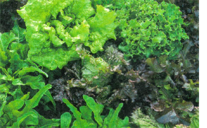

COUNTRY LORE
Your article on seed starting ("Start Your Own Seeds," December/January 2002) reminded me of the really easy
lettuce-planting technique I learned from my neighbor, Al Denuzzio. No indoor planting; no hardening off; no fear of frost. It couldn't be simpler. He sows seeds by broadcasting them on the ground in February, the coldest month of the year. Lettuce seeds are not bothered by the cold at all, nor are they bothered by the fact the ground is too frozen for them to penetrate. They just sit there, waiting for the ground to thaw so they can fall in some soil crevice and start to sprout. We live on the ocean, and very few plants can take the cold, windy spring salt air, but Al's lettuce does just fine.
He ends up with a section of his garden, about 4x6 feet, which is the first green thing in any of the area's gardens. By the time I'm thinking of planting my vegetables outside, he's already eating lettuce. He doesn't even thin the leaf lettuce seedlings, but rather transplants clumps of them to spots in the garden after they are a few inches tall.
Photo: DAVID CAVAGNARO
Once lettuce grows in this manner the occasional light frost won't damage the plants at all. They're as hardy as lettuce can be, having grown in the cold weather to start with. He doesn't particularly choose his varieties for hardiness either, but rather grows a number of brands, including those from his own garden plants gone to seed.
Head lettuce requires slightly more care. He has to separate them into individual plants before transplanting, which is really no big deal.
I used to envy him and his early, delicious lettuce. Finally I gave up and simply took up his offer for lettuce transplants. (My garden is much smaller, and I don't need many for my small family.) If I can only figure out a way to keep his slugs from coming with the transplants, I'll have the best of all lettuce worlds!
KEN BOUCHARD
Seabrook Beach, New Hampshire
|
 |
|
|